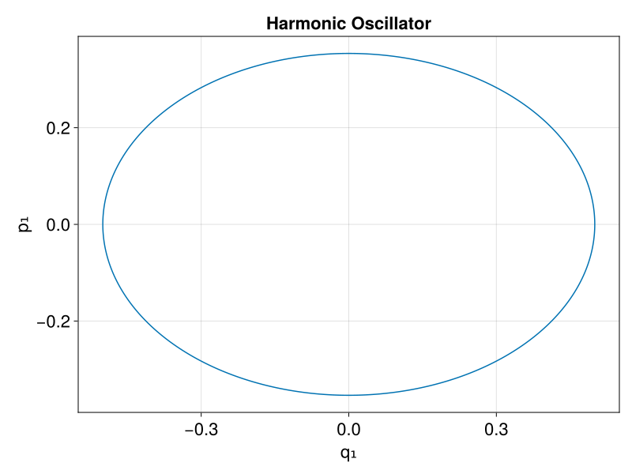

Hamiltonian Systems
Hamilton's equations of motion are given in terms of the Hamiltonian $H(q,p)$ by
\[\begin{align*} \frac{dq}{dt} &= \frac{\partial H}{\partial p} , & \frac{dp}{dt} &= - \frac{\partial H}{\partial q} . \end{align*}\]
In the following, we show how these equations can be obtained for the example of a harmonic oscillator.
Harmonic Oscillator
Before any use, we need to load EulerLagrange:
using EulerLagrangeNext, we generate symbolic variables for a one-dimensional Hamiltonian system:
t, q, p = hamiltonian_variables(1)(t, (q(t))[1:1], (p(t))[1:1])We define a named tuple with typical values for the parameters, e.g.,
params = (k=0.5, ω=√0.5)(k = 0.5, ω = 0.7071067811865476)We use the function symbolize to generate a symbolic version of the parameters:
sparams = symbolize(params)(k = kₚ, ω = ωₚ)Now we can define the Hamiltonian function:
using LinearAlgebra
H(t, q, p, params) = p ⋅ p / 2 + params.k * (q ⋅ q) / 2H (generic function with 1 method)The Hamiltonian, evaluated on and together with the symbolic variables and parameters is used to construct a HamiltonianSystem:
ham_sys = HamiltonianSystem(H(t, q, p, sparams), t, q, p, sparams)
Hamiltonian system with
H = (1//2)*((p(t))[1]^2) + (1//2)*kₚ*((q(t))[1]^2)The constructor computes Hamilton's equations and generates the corresponding Julia code. In the last step, we can now construct a HODEProblem from the HamiltonianSystem and some appropriate initial conditions, a time span to integrate over and a time step:
tspan = (0.0, 10.0)
tstep = 0.01
q₀, p₀ = [0.5], [0.0]
hprob = HODEProblem(ham_sys, tspan, tstep, q₀, p₀; parameters = params)Geometric Equation Problem for Hamiltonian Ordinary Differential Equation (HODE)
with vector fields
v = RuntimeGeneratedFunctions.RuntimeGeneratedFunction{(:ˍ₋out, :t, :Q, :P, :params), EulerLagrange.var"#_RGF_ModTag", EulerLagrange.var"#_RGF_ModTag", (0xe5312b5f, 0x659f961f, 0x5a7d2ff2, 0x3f963362, 0x8646876d), Expr}(quote
#= none:1 =#
#= none:2 =#
#= none:2 =# @inbounds begin
#= none:4 =#
begin
#= none:8 =#
#= none:8 =# @inbounds begin
#= none:10 =#
ˍ₋out[1] = getindex(P, 1)
#= none:12 =#
ˍ₋out
end
end
end
end)
f = RuntimeGeneratedFunctions.RuntimeGeneratedFunction{(:ˍ₋out, :t, :Q, :P, :params), EulerLagrange.var"#_RGF_ModTag", EulerLagrange.var"#_RGF_ModTag", (0x7059e7ce, 0xa19a00a4, 0xe52fc928, 0xd3a7a959, 0x3add9c2a), Expr}(quote
#= none:1 =#
#= none:2 =#
#= none:2 =# @inbounds begin
#= none:4 =#
begin
#= none:8 =#
#= none:8 =# @inbounds begin
#= none:10 =#
ˍ₋out[1] = (-1 // 1 * getindex(Q, 1)) * params.k
#= none:12 =#
ˍ₋out
end
end
end
end)
Hamiltonian: H = RuntimeGeneratedFunctions.RuntimeGeneratedFunction{(:t, :Q, :P, :params), EulerLagrange.var"#_RGF_ModTag", EulerLagrange.var"#_RGF_ModTag", (0x05b30522, 0x8e3423dc, 0x9ce4cc09, 0xa35d7f5e, 0x405968cd), Expr}(quote
#= none:1 =#
#= none:2 =#
#= none:2 =# @inbounds begin
#= none:4 =#
begin
#= none:8 =#
1 // 2 * getindex(P, 1) ^ 2 + (1 // 2 * getindex(Q, 1) ^ 2) * params.k
end
end
end)
Invariants:
GeometricBase.NullInvariants()
Timespan: (0.0, 10.0)
Timestep: 0.01
Initial conditions:
(t = 0.0, q = [0.5], p = [0.0])
Parameters:
(k = 0.5, ω = 0.7071067811865476)We can integrate this system using GeometricIntegrators:
using GeometricIntegrators
sol = integrate(hprob, Gauss(1))
using CairoMakie
fig = lines(parent(sol.q[:,1]), parent(sol.p[:,1]);
axis = (; xlabel = "q₁", ylabel = "p₁", title = "Harmonic Oscillator"),
figure = (; size = (800,600), fontsize = 22))